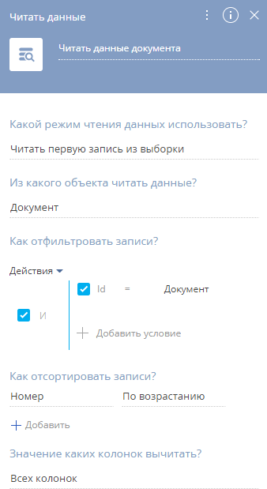
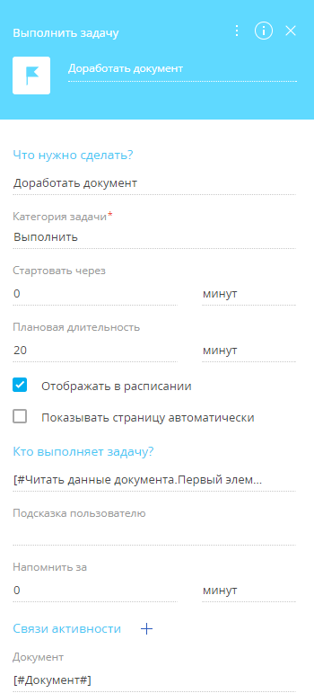
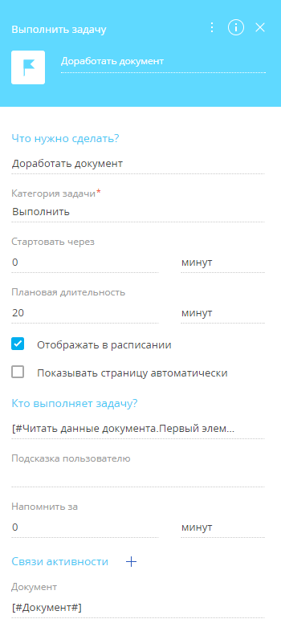
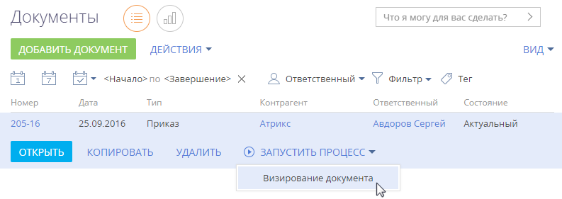
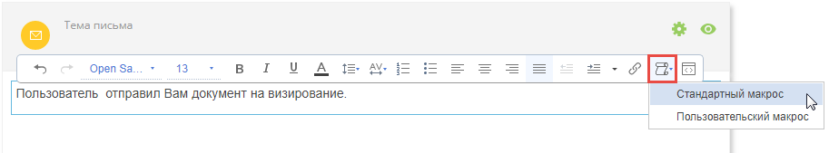
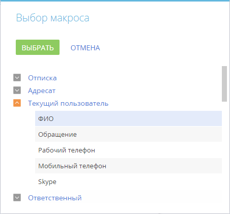

Настройка осуществляется в несколько этапов:
-
Настройка бизнес-процесса, приведенного на схеме (Рис. 1).
-
Настройка возможности запуска бизнес-процесса по записи раздела.
Настроить бизнес-процесс
-
Перейдите в библиотеку процессов и добавьте новый процесс.
-
В области настройки свойств процесса в поле Процесс введите название — “Визирование документа”.
-
Откройте вкладку Параметры и добавьте новый параметр. Данный параметр свяжет экземпляры процесса с документами, которые требуют визирования (Рис. 2). Значение параметра будет получено при запуске процесса из раздела, и этот же параметр будет использоваться при настройке процесса. Для добавления параметра:
-
В области настройки свойств процесса нажмите кнопку Добавить параметр и выберите “Справочник”.
-
В поле Название укажите “Документ”.
-
В поле Справочник укажите “Документ”.
-
Сохраните изменения.
-
- Добавьте на схему элемент Читать данные из группы Действия пользователя. Введите название элемента в поле Читать данные (например, “Читать данные документа”). Этот элемент будет передавать в процесс параметры, необходимые для выполнения последующих шагов.
- Настройте свойства элементов (Рис. 3).
-
В поле Какой режим чтения данных использовать? укажите “Читать первую запись из выборки”.
-
В поле Из какого объекта читать данные? укажите “Документ”. Из этого объекта будет вычитываться значение поля Ответственный для отправки уведомления о ходе визирования.
-
В области Как отфильтровать записи? настройте фильтр “Id = Документ”. Для этого нажмите на <Добавить условие>, выберите колонку “Id”, в появившемся меню выберите Сравнить с параметром, а затем в окне определения значения параметра выберите параметр процесса Документ.
-
В области Как отсортировать записи? по умолчанию настроена сортировка по возрастанию номеров.
Рис. 3 — Свойства элемента “Читать данные документа” - Поместите на схему элемент Визирование группы Действия пользователя — “Утвердить документ”. Элемент будет активироваться после запуска процесса визирования по записи раздела Документы.
- Настройте свойства элементов (Рис. 4).
-
В поле Цель визирования укажите “Требуется утверждение”.
-
В поле Объект визирования выберите “Документ”.
-
В поле Идентификатор записи по кнопке
 выберите пункт “Параметр процесса” и укажите параметр процесса “Документ”.
выберите пункт “Параметр процесса” и укажите параметр процесса “Документ”. -
В поле Кому отправить на визирование? укажите “Роли”.
-
В поле Роль из справочника Роли (представление) выберите “Финансовый отдел”. Так любой из сотрудников, входящих в эту роль, сможет завизировать документ.
-
Настройте возможность переадресовать визирование другому пользователю, установив признак Можно делегировать визирование.
-
В области Отправить e-mail уведомление настройте информирование визирующих о необходимости установки визы, а ответственного за документ — о факте визирования.
-
Отметьте вариант информирования “О необходимости выполнить визирование”.
-
В появившемся поле Шаблон сообщения по кнопке
 выберите шаблон уведомления о необходимости визирования документа из справочника Шаблон email-сообщения.
выберите шаблон уведомления о необходимости визирования документа из справочника Шаблон email-сообщения. -
Отметьте вариант информирования “О результате выполнения визирования”.
-
В поле Получатель уведомления нажмите кнопку и выберите в меню “Контакт”, затем нажмите на опцию “Параметр процесса”. Затем укажите параметр элемента процесса “Читать данные документа” —> “Ответственный”. Уведомление о результате визирования будет отправляться ответственному за документ.
-
В поле Шаблон сообщения по кнопке
 выберите шаблон уведомления о результате визирования из справочника Шаблон email-сообщения.
выберите шаблон уведомления о результате визирования из справочника Шаблон email-сообщения.
-
-
- Добавьте на схему два элемента Изменить данные группы Действия системы. Элементы “Изменить состояние документа на Подготовка” и “Изменить состояние документа на Актуальный” будут изменять данные визируемого документа в зависимости от результата визирования. Настройте свойства элементов (Рис. 5). Свойства элементов различаются только состоянием документа.
-
В поле Данные какого объекта изменить? укажите объект системы, работа с которым выполняется. В нашем примере это “Документ”. В нашем примере это “График”.
-
В области Как отфильтровать записи? настройте фильтр “Id = Документ”. Для этого нажмите на <Добавить условие>, выберите колонку “Id”, в появившемся меню выберите Сравнить с параметром, а затем в окне определения значения параметра выберите параметр процесса Документ.
-
В области Какие значения полей установить для измененных записей? укажите состояние, в которое будет переходить документ. В случае утверждения визы состояние завизированного документа изменится на “Актуальный”. В случае отклонения визы состояние визируемого документа изменится на “Подготовка”. Для этого нажмите на <Добавить поле>, выберите колонку “Состояние”. В появившемся поле Состояние по кнопке
 выберите пункт “Значение справочника”, а затем укажите следующие значения: “Актуальный” — для элемента “Изменить состояние документа на “Актуальный” и “Подготовка” — для элемента “Изменить состояние документа на Подготовка”.
выберите пункт “Значение справочника”, а затем укажите следующие значения: “Актуальный” — для элемента “Изменить состояние документа на “Актуальный” и “Подготовка” — для элемента “Изменить состояние документа на Подготовка”.
-
- Скопируйте ранее добавленный элемент Читать данные группы Действия системы — “Читать данные документа” и разместите его на схеме процесса после элемента Изменить состояние элемента на Подготовка. Элемент будет определять, кто будет назначен ответственным по доработке документа.
- Добавьте элемент Выполнить задачу группы Действия пользователя — “Доработать документ”. Элемент будет создавать задачу по доработке документа для ответственного в случае, если виза была отклонена.
- Настройте свойства элементов (Рис. 6).
-
В поле Что нужно сделать? введите название задачи.
-
Установите временные условия выполнения задачи в полях Стартовать через и Плановая длительность. Поле Стартовать через — это период, по истечении которого запланировано начало выполнения задачи. Поле Плановая длительность — ориентировочная длительность выполнения задачи.
-
Установите признак Отображать в расписании, чтобы задача отобразилась в расписании ответственного за документ сотрудника.
-
В поле Кто выполняет задачу? по кнопке
 выберите пункт “Параметр процесса”. Затем укажите параметр элемента процесса “Читать данные документа” —> “Ответственный”.
выберите пункт “Параметр процесса”. Затем укажите параметр элемента процесса “Читать данные документа” —> “Ответственный”. -
В области Связи активности настройте связь задачи с документом. Для этого:
-
По кнопке
 добавьте поле для связи с документом.
добавьте поле для связи с документом. -
По кнопке
 выберите пункт “Параметр процесса”, а затем укажите ранее добавленный параметр процесса “Документ”.Рис. 6 — Свойства элемента “Доработать документ”
выберите пункт “Параметр процесса”, а затем укажите ранее добавленный параметр процесса “Документ”.Рис. 6 — Свойства элемента “Доработать документ”
-
-
- После создания элементов процесса соедините их с помощью стрелок в правой части выделенного элемента:
-
С помощью стрелок условного потока соедините элемент “Утвердить документ” с элементами “Изменить состояние документа на Подготовка” и “Изменить состояние документа на Актуальный”.
-
Кликните по стрелке перехода к элементу “Изменить состояние документа на Подготовка” и выберите результат визирования — “Отрицательная”.
-
В свойствах перехода к элементу “Изменить состояние документа на Актуальный” укажите “Положительная”.
-
Оставшиеся элементы соедините потоками управления .
-
-
Сохраните бизнес-процесс. Далее настройте запуск этого бизнес-процесса.
 .
. в правой части поля
в правой части поля Настроить запуск бизнес-процесса
Процесс визирования документа будет запускаться по кнопке Запустить процесс на странице записи или в реестре раздела. Отображение кнопки нужно предварительно настроить (Рис. 7).
Для настройки потребуется связать процесс визирования документа с записями, по которым он будет выполняться. Для этого:
-
В разделе Документы нажмите кнопку Вид и выберите команду Открыть мастер раздела.
-
Перейдите на вкладку Бизнес-процессы. На детали Запуск бизнес-процесса из раздела нажмите кнопку
 . Откроется окно настройки запуска бизнес-процесса.
. Откроется окно настройки запуска бизнес-процесса. -
В поле Какой процесс запускать? укажите процесс “Визирование документа”.
-
Чтобы бизнес-процесс можно было запускать по отдельным записям раздела, выберите условие запуска “Для выбранной записи”.
Поле Параметр процесса, в который передается выбранная запись заполняется автоматически параметром “Документ” бизнес-процесса “Визирование документа”.
-
Сохраните изменения в окне и в мастере раздела.
В результате вы сможете запускать процесс визирования по любой записи раздела Документы (Рис. 8).
Рис. 8 — Запуск процесса из реестра раздела Документы
Настроить шаблон уведомления о визировании
Используйте элемент Визирование, чтобы настроить логику визирования пользователями различных записей Creatio (документов, счетов, заказов и т.д.). И визирующий, и пользователь, который отправляет документ на визирование, получат email-уведомления.
Вы можете настроить шаблон для этих уведомлений. Обратите внимание, что email-уведомления о визировании не требуют использования дополнительного элемента Отправить email, а настраиваются в самом элементе Визирование.
В приведенных ниже инструкциях предполагается, что у вас включена функциональность визирования в разделе Документы, на схему бизнес-процесса добавлен элемент Визирование (Рис. 9) и настроены его свойства (Рис. 6). Подробно о включении функциональность визирования в разделе читайте в статье “Элемент процесса [Визирование]”.
Для настройки шаблонов:
-
Заполните поля в области настройки элемента Визирование. Если поле Раздел визирования заполнено, то доступные шаблоны email-уведомлений о визировании будут отфильтрованы в соответствии с выбранным разделом.
-
Установите признак О необходимости выполнить визирование. Email-уведомление о необходимости визирования будет отправлено ответственному за выполнение визирования. Если в поле Кому отправить на визирование? выбрано значение "Роли", то уведомление получат все сотрудники, которые входят в эту роль.
-
В поле Шаблон сообщения нажмите
 (Рис. 10). Откроется окно для создания нового шаблона.
(Рис. 10). Откроется окно для создания нового шаблона. -
В новом окне заполните поле Название шаблона. Обратите внимание, если вы заполняли ранее поле Раздел визирования, то поле Источник макросов будет сразу заполнено (в текущем примере — объект “Визы в разделе Документ” (Рис. 11).
-
Нажмите кнопку Редактировать. Шаблон откроется в дизайнере контента.
-
Введите тему письма.
-
Перетащите блок контента (например Текст) в шаблон. Замените стандартный текст в блоке на необходимый.
-
Добавьте макросы в текст шаблона:
-
Кликните по тексту в той области, в которую нужно добавить макрос, нажмите кнопку и выберите Выбрать макрос (Рис. 12). Откроется окно выбора макроса.
Рис. 12 — Добавление макроса в дизайнере контента -
Выделите в окне необходимый макрос и нажмите кнопку Выбрать. Доступные макросы разделены на несколько групп полей.
Вы можете указать данные получателя email-уведомления (группа “Адресат”), пользователя, который запускает процесс визирования (группа “ Текущий пользователь”) или данные визирующего (группа “Ответственный”). Например, для добавления имени пользователя, отправившего документ на визирование, выберите Текущий пользователь —> макрос ФИО (Рис. 13).
Рис. 13 — Добавление макроса в текст email-уведомленияВыбранный макрос будет добавлен в указанное место в тексте.
-
-
Добавьте в шаблон email-уведомлений макросы по связанным объектам.
-
Кликните по тексту в той области, в которую нужно добавить макрос, нажмитекнопку
 и выберите Выбрать колонку. Откроется окно Выбор колонки.
и выберите Выбрать колонку. Откроется окно Выбор колонки. -
В окне Выбор колонки укажите колонку связанного объекта, значение которой нужно вывести в текст уведомления. Объект создается автоматически после установки в мастере раздела признака Доступно визирование в разделе и содержит данные визирования: цель, имя визирующего и т.д.
-
Можно добавить макросы для колонок любого объекта, связанного с визируемым объектом, например столбцы документа. Чтобы выбрать колонку связанного объекта, нажмите + рядом с названием визируемого объекта в окне Выбор колонки (Рис. 14). Например, для добавления типа и номера визируемого документа, выберите колонки Тип и Номер из связанного объекта Документ.
В результате шаблон будет выглядеть следующим образом (Рис. 15):
-
-
Сохраните изменения в дизайнере контента и в шаблоне email-уведомления.
-
В свойствах элемента Визирование установите признак О результате визирования и заполните поле Получатель уведомления. В поле можно указать любой контакт Creatio, контрагент или адрес электронной почты. Например, можно отправить уведомление о результате визирования пользователю, который отправил запрос на визирование или который создал запись и т.д.
-
Повторите шаги 3–10, чтобы создать шаблон уведомления о результатах визирования.
-
Сохраните процесс.
В результате при отправке пользователем запроса на визирование документа, процесс отправит email-уведомления согласно настроенным шаблонам.